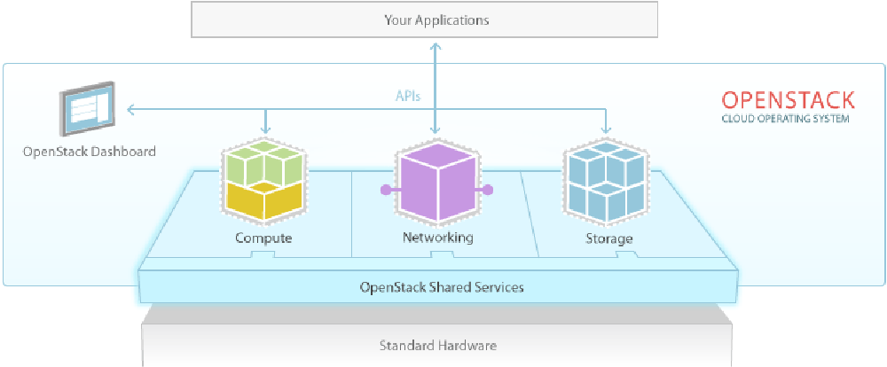

Growing an Open Source Community:
How we grew the OpenStack Project

Linux of the Cloud
Quick History Lesson
'Differentiation'
AIX, Ultrix, HPUX, Solaris, Irix
Linux
Everyone can Participate
Rackspace Cloud
Open Source, Design, Development and Community
Liberté, égalité, fraternité
Fraternity/Community
Freedom
Apache 2 License
Egalitarian Process
Everyone can Participate
Open Design Summits in Person
Open Meetings on IRC
Public Source Code Repositories
Meritocracy
Code Review
Code Standards
Consistent technology
Automated Testing
Automated Everything
Constant Vigilence
Remember AIX and Irix and HPUX and Solaris?